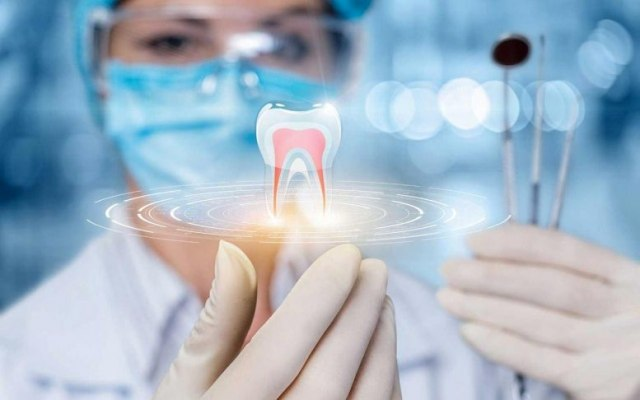

<div class="homepage">
    <div class="homepage-center">
        <div class="homepage-left">
            <h2>Zubni implanti - najnovije tehnike: Raspon cena, ocene ordinacija i zakazivanje termina</h2>
            <p>Kao što postoje marke automobila Fiat, Škoda, VW, Mercedes i Ferrari, tako postoje i različiti brendovi i
                kvalitet implantata, a da budemo iskreni, isto se može reći i za razlike u iskustvu, kvalitetu i cenama
                rada različitih stomatologa.</p>
            <p><b>Popunite kratku <span style="color: #af376d;">formu</span>(sa desne strane ili u dnu ovog teksta) i
                    kliknite "Pošaljite" kako bismo Vas informisali o cenama i najnovijim tehnikama ugradnje implantata
                    u Srbijii i regionu.</b> Razlike u cenama su često značajne za isti kvalitet usluga u različitim
                ordinacijama, pa ćete <b>samo na osnovu ovih informacija moći da uštedite od nekoliko stotina do čak
                    nekoliko hiljada evra za veće intervencije.</b></p>
            <p><b>Možete i direktno kontaktirati naše administratore na telefon Tourist Medical web platforme
                    +381.62.256.000</b>, a možete nam pisati ili pozvati na Viber ili WhatsApp na navedeni broj ukoliko
                se javljate iz inostranstva.</p>
            <div class="homepage-tooth-image">
                <a href="../../index.html"></a>
            </div>
            <h4>Tourist Medical platforma</h4>
            <p>Radimo samo sa proverenim i preporučenim ordinacijama koje imaju najviše ocene od strane pacijenata, a
                pored toga što ćemo vam uštedeti vreme, garantujemo najnižu cenu za dati kvalitet usluge.</p>
            <p>Naš tim sa booking platforme Tourist Medical koji posluje u okviru Sharebico grupacije, radi završne
                pripreme za lansiranje globalne booking platforme za medicinske usluge. Platforma pokriva i Srbiju koja
                je prepoznata po kvalitetnim doktorima, ali i značajno nižim cenama u odnosu na razvijene zemlje zapada.
            </p>
            <p>Iako je dodavanje različitih funkcionalnosti i unapređenje dizajna Tourist Medical platforme i daje u
                toku, već sada možete dobiti besplatne savete, ali i rezervisati termin po najpovoljnijim uslovima za
                dati kvalitet usluge.</p>
            <p>Pored medicinskih usluga, Sharebico platfoma će pokrivati i usluge rezervacija rent a car-a, smeštaja,
                avio karata, rezervacije događaja i drugih usluga na globalnom nivou.</p>
            <h4>Kako se kreću cene za implante i protetiku u Srbiji?</h4>
            <p><b>Zubni implanti se kreću od 300 do 1.000 eur po implatnu za one najkvalitetnije.</b> Implanti lošijeg
                kvaliteta ili one koji su rizični da naprave problem sa zdravljem, ne mogu biti ni vidljivi na Tourist
                Medical platformi, niti sarađujemo sa takvim ordinacijama.</p>
            <p><b>Bezmetalne krunice</b> se kreću od 140 do 200 evra.</p>
            <p><b>Metalo-keramičke krunice</b> od 70 - 120 evra</p>
            <p><b>Akrilatne proteze</b> od 150 - 350 evra</p>
            <p><b>Hollywood Smile</b> za obe vilice od 2.800 do 5.600 evra</p>
            <p>Za detalje, kontaktirajte nas na +381.62.256.000.</p>
        </div>
        <div class="homepage-right">
            <div class="heading-form">Popunite formu</div>
            <div class="user-data-inputs">
                <div class="section">
                    <div class="label"><span style="color: #af376d;">*</span>Ime i prezime</div>
                    <input class="input">
                </div>
                <div class="section">
                    <div class="label">Email</div>
                    <input class="input">
                </div>
                <div class="section">
                    <div class="label"><span style="color: #af376d;">*</span>Broj telefona</div>
                    <input class="input">
                </div>
                <div class="section">
                    <div class="label"><span style="color: #af376d;">*</span>Zemlja i grad prebivališta</div>
                    <input class="input">
                </div>
            </div>
            <div class="user-data">
                <div class="label"><span style="color: #af376d;">*</span>Koja usluga vas interesuje?</div>
                <div class="section-check-radio">Protetika</div>
                <div class="section-check-radio">Implanti</div>
                <div class="section-check-radio">Lečenje zuba</div>
                <div class="section-check-radio">Nešto drugo</div>
            </div>
            <div class="user-data">
                <div class="label"><span style="color: #af376d;">*</span>Idealna lokacija ordinacije</div>
                <div class="section-check-radio">Beograd i okolina</div>
                <div class="section-check-radio">Novi Sad i okolina</div>
                <div class="section-check-radio">Drugi grad u Srbiji</div>
                <div class="section-check-radio">Region</div>
                <div class="section-check-radio">Svejedno</div>
            </div>
            <div class="user-data">
                <div class="label"><span style="color: #af376d;">*</span>Kada biste posetili stomatologa?</div>
                <div class="section-check-radio">Što pre</div>
                <div class="section-check-radio">U narednih mesec dana</div>
                <div class="section-check-radio">U naredna 3 meseca</div>
                <div class="section-check-radio">U narednih 6 meseci</div>
                <div class="section-check-radio">Ne znam</div>
            </div>
            <div class="user-data">
                <div class="label">Napomena</div>
                <textarea name="napomena" rows="6" cols="45"></textarea>
            </div>
            <div class="buttons">
                <div class="posaljite">Pošaljite</div>
                <div class="odustanite">Odustanite</div>
            </div>
        </div>
    </div>
</div>